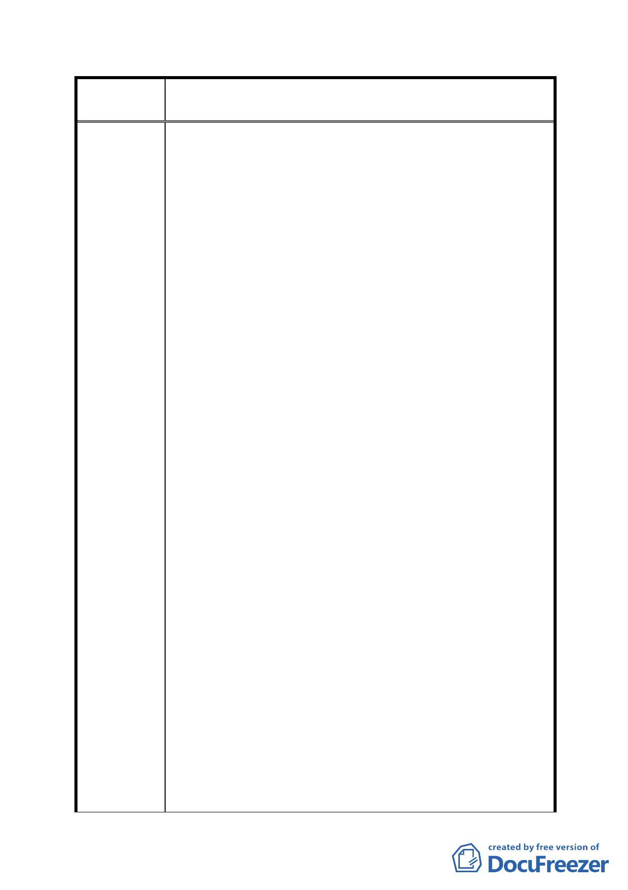

案
名
修訂臺北市「基隆河（中山橋至成美橋段）附近地區土地使
用分區與都市設計管制要點」（北段地區）計畫案
減少建築造型之彈性和導致喪失投資人開發意願，不應
再降低移入量。
三、條文：十七、開發許可：
內容…本項代金之計算得比照84年9月27日公告之「修訂台
北市主要計畫商業區(通盤檢討)計畫案」內回饋代金公式辦
理
建議理由：回饋代金部分，採用84年計劃案，金額過高，該
條文形同虛設，完全無任何誘因，再者該計畫案乃針對
住宅變更為商業用途，強度增加所衍生停車需求擴大，
而改以繳納代金，但本計畫乃是商業用途改為住宅用
途，強度降低，不應再繳納代金。
四、條文：二、土地使用強度：
內容：商業區，娛樂區建蔽率以50~60%為原則
建議理由：建蔽率規定是以最大值規範，本次修訂增列最小
建蔽率，如遇特殊形狀及狹小基地者將難以達到設計要
求，並且50% 建蔽率將嚴重影響開放空間規劃且減少建
築造型之彈性以及影響開放空間品質。
五、條文：十、(三)出入動線分離…
條文：十六、(二)一,二層不得設置超過當層lO%之管委
會空間。
條文：十六、(三)公眾使用設施(如梯廳、廁所、茶水
間等)應集中留設。
建議理由：出入動線分離將嚴重限制設計，並且基地狹小者
設計會造成極大困難，管委會空間及公眾使用設施等有
關設計部份，應回歸技術規則規範。
六、條文：附表l土地及建築物使用組別容許表，中之指定
使用組別 (…營業樓地扳面積規模須大於500平方公
尺…)。
建議理由：該規定違反市場機制，增加開發風險，實際執行
勢必困難。
結論：該計劃案期望未來金泰段地區繼續維持商業及娛樂的
主要用途，立意優良，但對於住宅用途及開放空間設計限制
太多，反而容易造成有住宅需求時，反而必須犧牲容積獎
勵，形成搶建及繼續違規使用之情形，對於此區域發展未必
是件好事，建議應考量現狀，無條件放寬使用用途，並且鼓
勵設計者創造更多元之建築設計空間，否則條文修正無法落
- 57 -